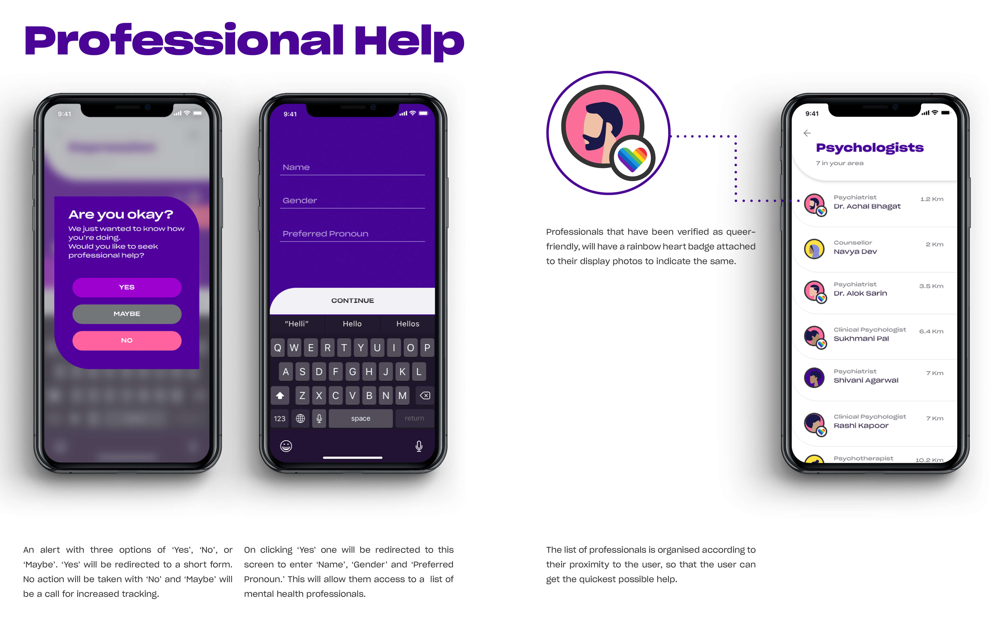

The Topic.
Whether or not we are aware of it, design affects the way we interact with our environment and with ourselves, from industrial, automotive to communication design, good designers have all understood the need to connect their creation back to the basics of human engagements.
In mental health, design seeks to create the best possible and easily accessible services that not only serve to bridge the gaps between communities and mental health institutions but also eventually be a one stop solution for clients.

Key Questions.
How can we help users verbalise their problems?
How can we help users not feel isolated and alienated?
How can we provide users with immediate stress/anxiety relief?
How can we help users reach out for professional help?
The Target Audience.
Ages: 15-25
Teenager to Young Professional
Gender: Any
No discrimination, Inclusive of All
Added focus on the Queer Community
Education Level: English Speaker
Income Level: Smartphone Owner
Equilibrium aims to be a fully LGBT+ friendly space, providing tailored services to the LGBT+ community.
The Concept
Users connect through similar topics of interest.
All messages are moderated, and sensitive content has warnings.
Idea is for people to share their stories and experiences with people that may have had similar experiences.
This can help people not feel alone or isolated and help them realise that other people have been through similar things.
All of these concepts have worked wonders individually, imagine them presented in a consolidated and curated experience.
Improve not Invent.
Mental Health Interventions require Subtlety.
The App
Introduction.
The use of playful colors and typography is attributed towards an attempt to avoid creating a “hospital-like environment”. Illustrations are also used, so as to avoid showing real people facing any problems.

Passive Symptom Tracking
This is a form of digital intervention that monitors social interactions, movements and behaviours,vocal tone/speed, facial mood recognition passively at different times of the day using smartphone sensors and monitoring texts.
The global positioning system (GPS) functionality of most smartphones can be leveraged to locate the patient geographically in case of urgency due to the unpredictable symptoms of some conditions.
So while an application cannot entirely replace the clinician, it can most definitely aid the mental health sector in quickening the process of seeking help.
In Equilibrium, Passive Symptom Tracking will create an alert asking the client about seeking professional help.
This is the end product of identifying behaviour patterns in the customer consensually through the key words they use or the kind of content that they access. The overall goal is to be able to judge the user’s real-time state of mind.
If there is a drastic change in an individual’s behaviour, the application will detect this.
For example, if there is a certain pattern that X individual follows on the application like watching an ASMR video every night and other specificities, while prior to having anxiety episodes the individual is patterned for wanting to talk on sensitive support groups, send triggering details in chats and be online beyond a certain time on the application - this information can help in predicting an episode on a later date.
The App doesn’t replace a mental health professional, but it connects the user with the appropriate caregivers when needed.
Equilibrium is simply a band-aid on the problems we face here and now, it’s not a long term healing medium.